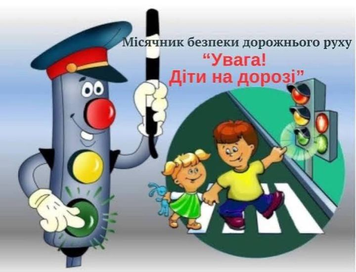
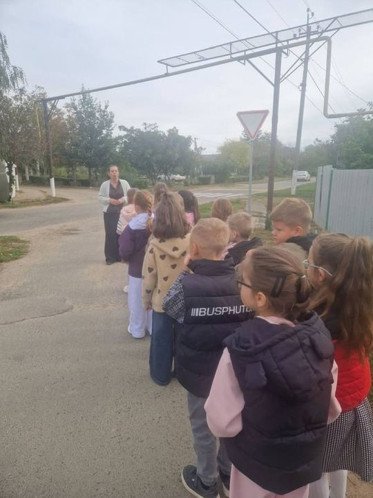
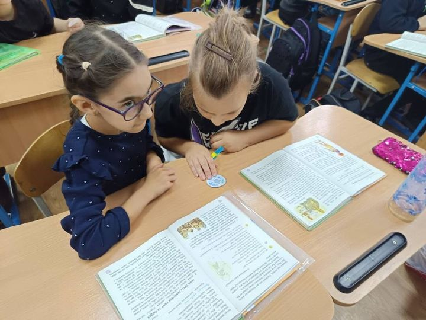
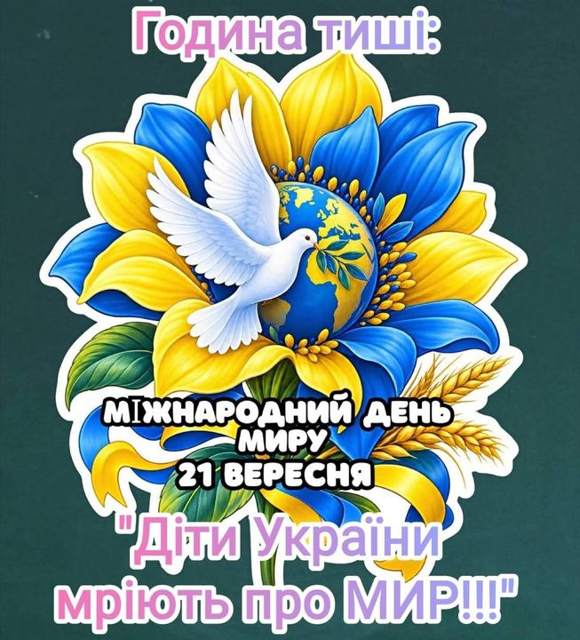
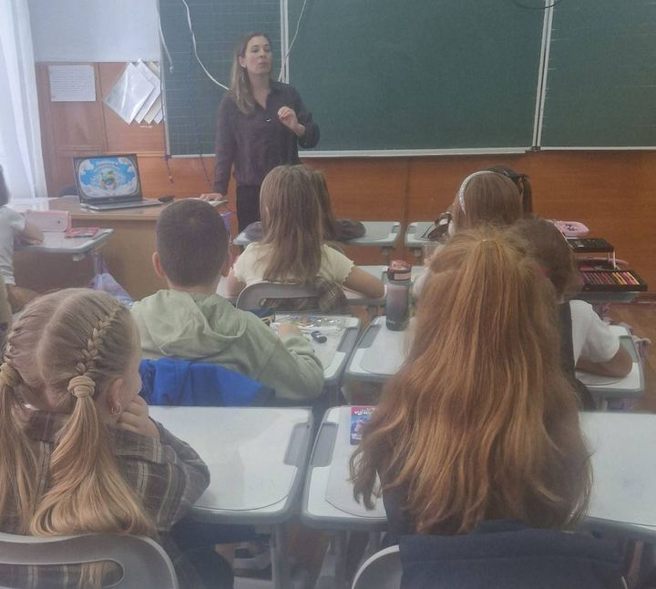
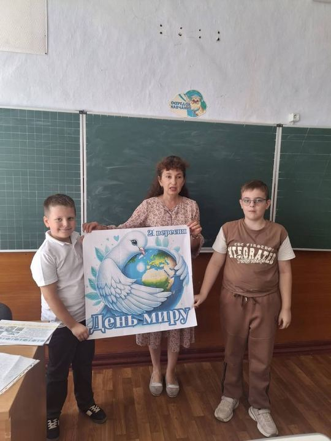
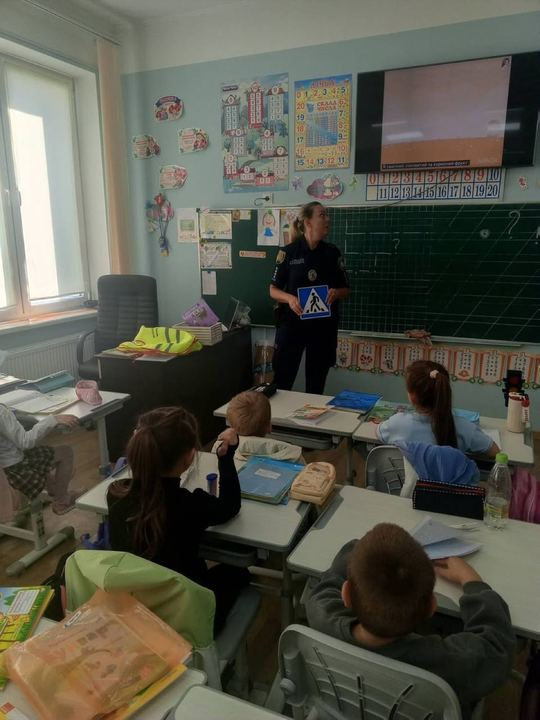

Новини
Події, оголошення й досягнення ліцею. Дописи переносимо зі спільноти ліцею у Facebook.
-

БезпекаМісячник «Увага! Діти на дорозі!» у 6-А класі -

БезпекаМісячник безпеки дорожнього руху у 2-А класі! - БезпекаУкраїнська нація в усі часи відзначалася високим потягом до історії свого краю!!!
- БезпекаУ 5-А класі відбулася класна година, присвячена безпеці на дорозі.
-

БезпекаУ межах Тижня протидії булінгу з учнями початкових класів проведено інтерактивне заняття на тему… - Життя ліцеюДо Міжнародного дня миру учнівське самоврядування нашого ліцею разом з учнями 9-Б класу створили…
-

БезпекаМир - всеоб'ємне слово... Однак, в кожного українця наразі воно асоціюється з чистим небом над… -

Життя ліцею21 вересня - День миру — день, коли особливо хочеться тиші, добра й безпеки. -

Життя ліцеюЩороку з 1981р. 21 вересня в усьому світі відзначають Міжнародний день миру. До цієї дати в… - НавчанняОлімпійський тиждень: спорт виховує характер
-

БезпекаЗ учнями 1-Б класу інспектором ВСОБ ОРУП2 ГУНП в Одеській області капітаном поліції Шматко Л.О. - Життя ліцеюЄ професії, де слово "рятувати" - щоденна робота...